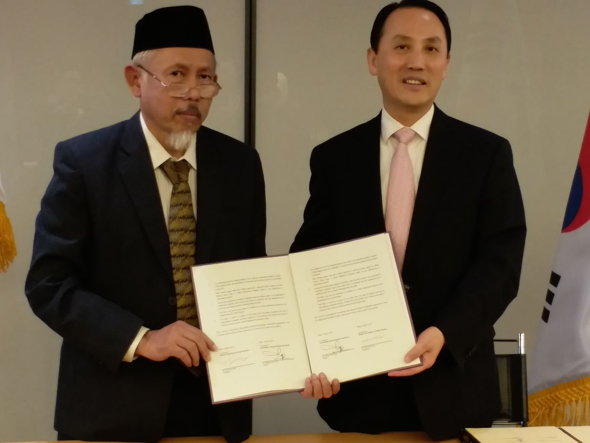
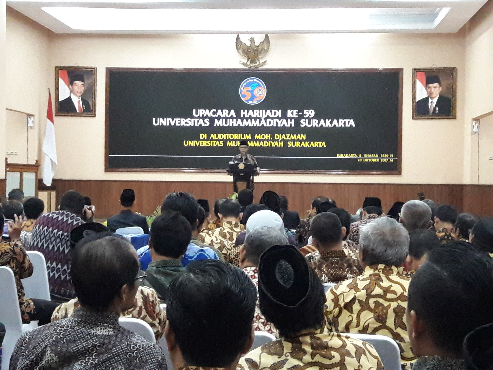
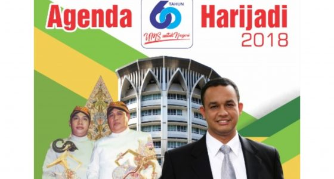
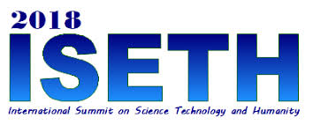
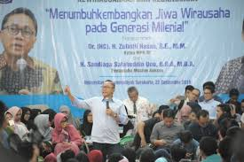

Universitas Muhammadiyah Surakarta (UMS) menggandeng kerja sama di bidang riset dengan Universiti Teknologi Petronas (UTP) dan Universitas Muhammadiyah Prof Dr Hamka (UHAMKA).

Universitas Muhammadiyah Surakarta (UMS) kini memperingati harijadinya yang ke-60. Salah satu yang menjadi acara puncak harijadi ini adalah dengan diselenggarakannya upacara, Sabtu (27/10/2018).

Rangkaian acara Semarak Milad Universitas Muhammadiyah Surakarta ke-60 dilanjutkan dengan kegiatan Jalan Sehat dan Bazar. Kegiatan yang berlangsung pada hari Ahad (28/10), di awali dengan pembukaan dan start dari Timur Masjid Sudalmiyah Rais UMS. Dimulai pukul 06.00 WIB pagi, dengan rute perjalanan mulai dari Masjid Sudalmiyah Rais, kemudian mengitari Tugu Makutha Solo, Edupark UMS hingga selesai di Gedung Olah Raga (GOR) UMS. Jalan sehat yang rutin diselenggarakan setiap tahunnya ini, kali ini diikuti oleh seluruh sivitas akademika UMS, Pimpinan Muhammadiyah se-Solo Raya, Mitra UMS dan masyarakat umum sekitar kampus UMS.

Dalam rangka memeriahkan semarak Milad UMS ke 60, Universitas Muhammadiyah Surakarta (UMS) menyelenggarakan konferensi internasional. Konferensi terasebut bertajuk International Summit on Science, Technology and Humanity (ISETH)'. Acara yang mengusung tema 'Integrating knowledge for future sustainable developmemt' ini bertempat di Ruang seminar lantai 7 Gedung Induk Siti Walidah UMS, Rabu - Kamis (24-25/10).

Universitas Muhammadiyah Surakarta (UMS) menggelar kuliah umum kewirausahaan dan kebangsaan. Kegiatan tersebut dilaksanakan dengan tujuan meningkatkan wawasan para mahasiswa dan pengembangan soft skill mereka. Dalam kuliah umum kali ini, UMS mengambil tema "Menumbuhkan Jiwa Wirausaha Pada Generasi Milenial".